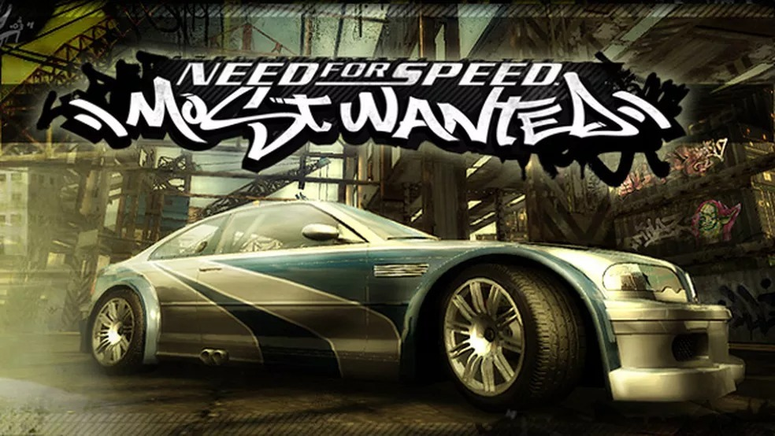
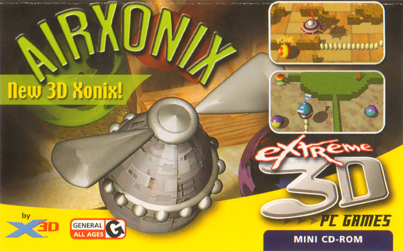

Jogos da semana
NEED FOR SPEED MOST WANTED
| O Need for Speed Most Wanted de 2005 é que nem vinho, fica melhor cada vez que envelhece. A principal atração do jogo é a vasta customização que é disponível para o usuário. Muitos comparam com a versão mais atualizada deste jogo, a versão de 2012, mas não importam as tentativas, o jogo ainda leva a melhor. |
 |
XONIX
| AirXonix é um jogo 3D "moderno feito nos anos 2000 que também é um remake do jogo Xonix, que é um pouco mais antigo. Você controla uma esfera voadora que se move em um campo cujo seu objetivo é de fechar as bolas. As bolas ficam mais rígidas e corrosivas a medida que a dificuldade aumenta. |
 |
SLY COOPER
| Sly Cooper é uma série de jogos de vídeo furtivos de plataforma para a PlayStation 2, PlayStation 3 e PlayStation Vita. Os três primeiros jogos da série foram desenvolvidos pela Sucker Punch Productions. A Sanzaru Games desenvolveu o quarto jogo enquanto a Sucker Punch trabalhou na série Infamous. |

|